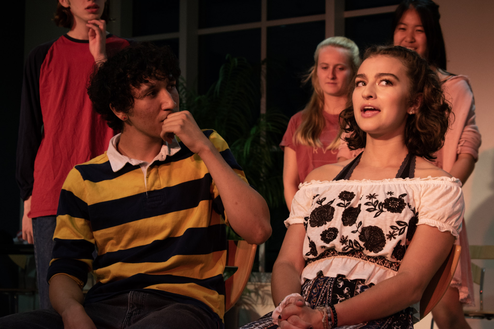
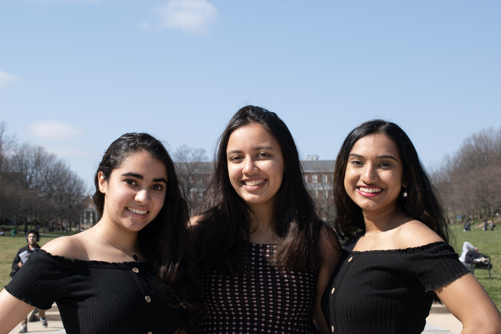

An Ode to a Microphone
By Ambi Narula
How can something so small be so dangerous?
Before you, I didn’t know who I was
because of you, I wasn’t afraid of the world anymore
Why need a man, when I have you?
My hands’ tingle with your warm body
My heart racing as I look toward the ocean
of eyes judging me
My lips close to yours
My voice chokes as I test your sound
Can everyone hear me?
I squint around the room seeing nods of heads
I breathe heavily into you
and started speaking
My voice getting louder, confident and excited the more I feel you
my once wet mouth
now parched for the 5 mins I used you
I set you back on the stand
Where you belong
I look back to the spot where I just stood
Your face smushed against someone else new now
I’m counting down the days until I can hold and love you again
Client: UMD Bureau Improv
Client: SASA UMD
Opening for Nikki Glaser at DC Improv
Photo with Nikki Glaser